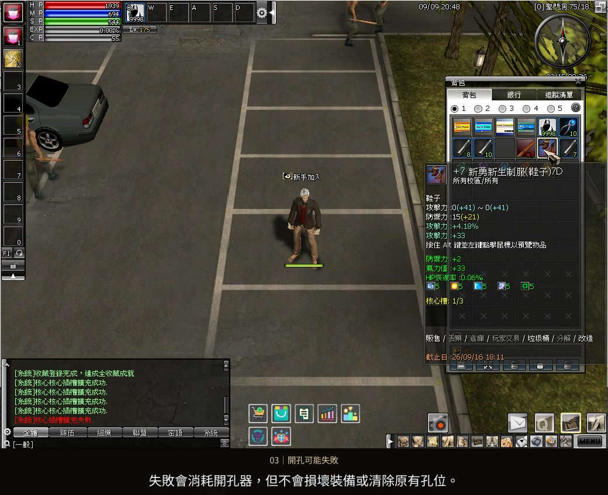
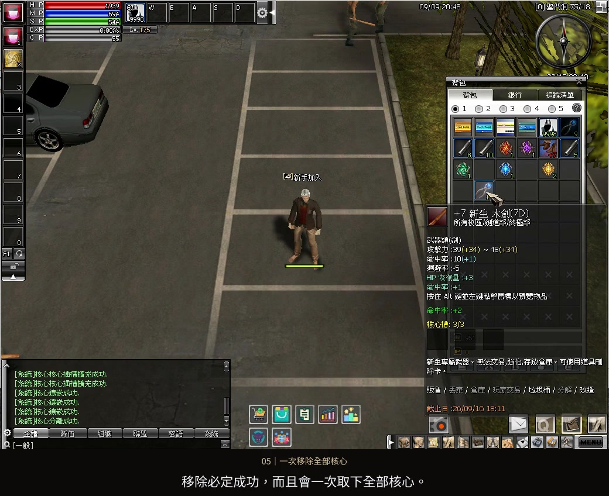
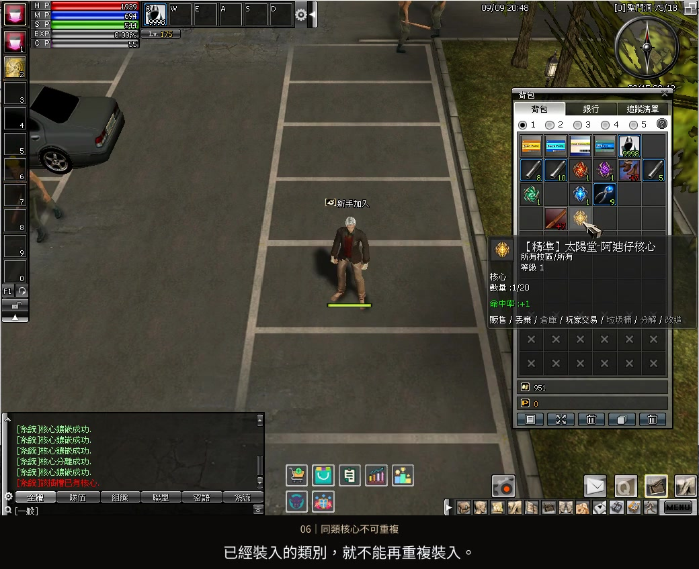

開孔與失敗
先看成功率，再使用開孔器
每次成功開啟一孔，每件裝備最多三孔。未達 100% 成功率的開孔器有機會失敗；失敗會消耗開孔器，但不會損壞裝備或清除原有孔位。
遊玩指南 04 / 裝備核心
從開孔、裝入到移除，跟著實機操作了解核心系統。
每件裝備最多三顆核心，同一類別不可重複。
影片暫時無法載入，請重新整理或使用下載影片連結。下方圖文仍可查閱。
選擇章節，跳到對應操作與規則說明。
同一件裝備可搭配不同類別的核心，但每種類別最多一顆。最多三孔、每孔一顆；武器與防具的規則相同。

每次成功開啟一孔，每件裝備最多三孔。未達 100% 成功率的開孔器有機會失敗；失敗會消耗開孔器，但不會損壞裝備或清除原有孔位。

選取核心移除器，對裝備按右鍵使用。所有核心會返回背包，移除器會消耗；不能指定只移除其中一孔。

每個孔位只能裝一顆核心，每件裝備最多三顆。同一類別不能重複裝入，剩餘孔位需選擇其他類別。武器與防具都適用。